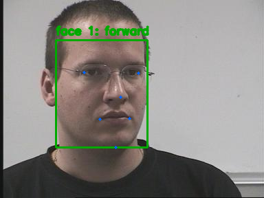
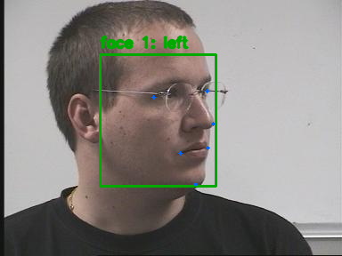
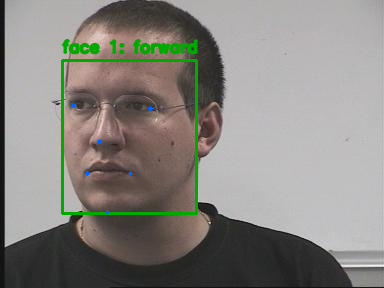
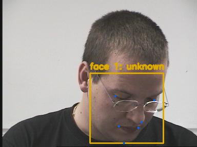
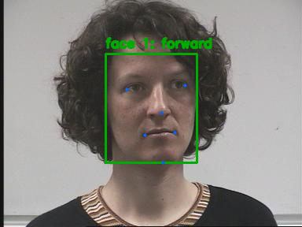

GAZE · Five-image fresh-clone spike
Run passed · 5 real validation images processed · 5 annotated outputs saved
22 October 2026 · New Git clone and virtual environment on F: · Python 3.12.10 · Windows desktop · CPU inference
python scripts/spike.py --output-dir outputs/runs/spike
Verified source: bf6002fe4b3a47fe9c8abb649543065d91093e5e

01-person01145+0-15.png
Source label: forward · Predicted: forward
02-person01142+0-60.png
Source label: left · Predicted: left
03-person01148+0+30.png
Source label: right · Predicted: forward
04-person01106-60-15.png
Source label: down · Predicted: unknown
05-person02145+0-15.png
Source label: forward · Predicted: forwardEvidence viewer showing the actual output PNGs from this run. Pointing04 source photographs: N. Gourier, D. Hall, and J. L. Crowley (2004), used with attribution. This feasibility run establishes execution, not an accuracy benchmark, another student’s reproduction, or intended-laptop performance. Full commands, dependency versions, output hashes, and model checksum are saved with the evidence.